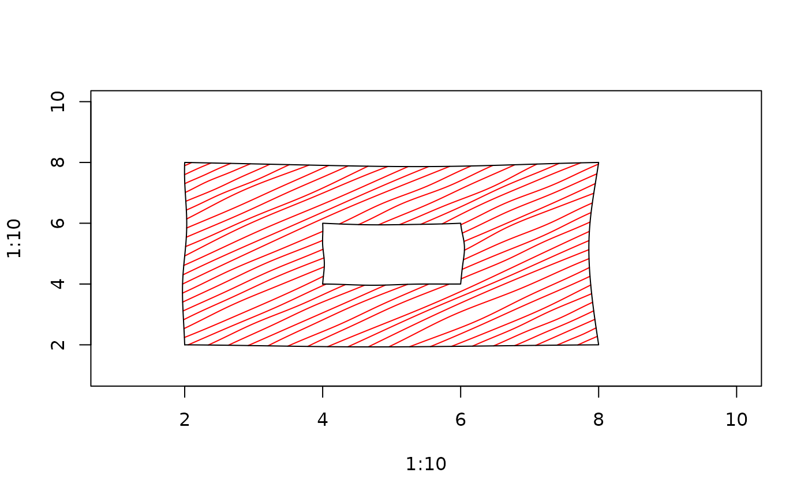

Compute or draw a rough multipath
Arguments
- x, y
Coordinates as for
graphics::polypath().- id
Optional path ids. Consecutive points with the same
idbelong to one closed ring.- rule
Fill rule,
"winding"or"evenodd".- hand
Hand-drawn geometry settings created with
hand().- col
Fill colour. When visible and
fill_patternisNULL, a solid fill is drawn.- border
Border colour.
- fill_pattern
Optional fill pattern created with
hatch(),crosshatch(),zigzag(), orjumble().- ...
Graphics parameters passed to
graphics::lines().
See also
Other rough drawing helpers:
rough_arrows(),
rough_lines(),
rough_points(),
rough_polygons(),
rough_rect(),
rough_segments()
Examples
rough_polypath(c(2, 4, 4, 2, 2.5, 3.5, 3.5, 2.5),
c(2, 2, 4, 4, 2.5, 2.5, 3.5, 3.5),
id = c(rep(1, 4), rep(2, 4)),
rule = "evenodd")
#> $x
#> [1] 2.000000 2.086957 2.173913 2.260870 2.347826 2.434783 2.521739 2.608696
#> [9] 2.695652 2.782609 2.869565 2.956522 3.043478 3.130435 3.217391 3.304348
#> [17] 3.391304 3.478261 3.565217 3.652174 3.739130 3.826087 3.913043 4.000000
#> [25] 4.000000 4.000000 4.000000 4.000000 4.000000 4.000000 4.000000 4.000000
#> [33] 4.000000 4.000000 4.000000 4.000000 4.000000 4.000000 4.000000 4.000000
#> [41] 4.000000 4.000000 4.000000 4.000000 4.000000 4.000000 4.000000 3.913043
#> [49] 3.826087 3.739130 3.652174 3.565217 3.478261 3.391304 3.304348 3.217391
#> [57] 3.130435 3.043478 2.956522 2.869565 2.782609 2.695652 2.608696 2.521739
#> [65] 2.434783 2.347826 2.260870 2.173913 2.086957 2.000000 2.000000 2.000000
#> [73] 2.000000 2.000000 2.000000 2.000000 2.000000 2.000000 2.000000 2.000000
#> [81] 2.000000 2.000000 2.000000 2.000000 2.000000 2.000000 2.000000 2.000000
#> [89] 2.000000 2.000000 2.000000 2.000000 2.000000 2.500000 2.590909 2.681818
#> [97] 2.772727 2.863636 2.954545 3.045455 3.136364 3.227273 3.318182 3.409091
#> [105] 3.500000 3.500000 3.500000 3.500000 3.500000 3.500000 3.500000 3.500000
#> [113] 3.500000 3.500000 3.500000 3.500000 3.409091 3.318182 3.227273 3.136364
#> [121] 3.045455 2.954545 2.863636 2.772727 2.681818 2.590909 2.500000 2.500000
#> [129] 2.500000 2.500000 2.500000 2.500000 2.500000 2.500000 2.500000 2.500000
#> [137] 2.500000 2.500000
#>
#> $y
#> [1] 2.000000 2.000000 2.000000 2.000000 2.000000 2.000000 2.000000 2.000000
#> [9] 2.000000 2.000000 2.000000 2.000000 2.000000 2.000000 2.000000 2.000000
#> [17] 2.000000 2.000000 2.000000 2.000000 2.000000 2.000000 2.000000 2.000000
#> [25] 2.086957 2.173913 2.260870 2.347826 2.434783 2.521739 2.608696 2.695652
#> [33] 2.782609 2.869565 2.956522 3.043478 3.130435 3.217391 3.304348 3.391304
#> [41] 3.478261 3.565217 3.652174 3.739130 3.826087 3.913043 4.000000 4.000000
#> [49] 4.000000 4.000000 4.000000 4.000000 4.000000 4.000000 4.000000 4.000000
#> [57] 4.000000 4.000000 4.000000 4.000000 4.000000 4.000000 4.000000 4.000000
#> [65] 4.000000 4.000000 4.000000 4.000000 4.000000 4.000000 3.913043 3.826087
#> [73] 3.739130 3.652174 3.565217 3.478261 3.391304 3.304348 3.217391 3.130435
#> [81] 3.043478 2.956522 2.869565 2.782609 2.695652 2.608696 2.521739 2.434783
#> [89] 2.347826 2.260870 2.173913 2.086957 2.000000 2.500000 2.500000 2.500000
#> [97] 2.500000 2.500000 2.500000 2.500000 2.500000 2.500000 2.500000 2.500000
#> [105] 2.500000 2.590909 2.681818 2.772727 2.863636 2.954545 3.045455 3.136364
#> [113] 3.227273 3.318182 3.409091 3.500000 3.500000 3.500000 3.500000 3.500000
#> [121] 3.500000 3.500000 3.500000 3.500000 3.500000 3.500000 3.500000 3.409091
#> [129] 3.318182 3.227273 3.136364 3.045455 2.954545 2.863636 2.772727 2.681818
#> [137] 2.590909 2.500000
#>
#> $id
#> [1] 1 1 1 1 1 1 1 1 1 1 1 1 1 1 1 1 1 1 1 1 1 1 1 1 1 1 1 1 1 1 1 1 1 1 1 1 1
#> [38] 1 1 1 1 1 1 1 1 1 1 1 1 1 1 1 1 1 1 1 1 1 1 1 1 1 1 1 1 1 1 1 1 1 1 1 1 1
#> [75] 1 1 1 1 1 1 1 1 1 1 1 1 1 1 1 1 1 1 1 2 2 2 2 2 2 2 2 2 2 2 2 2 2 2 2 2 2
#> [112] 2 2 2 2 2 2 2 2 2 2 2 2 2 2 2 2 2 2 2 2 2 2 2 2 2 2 2
#>
#> $rule
#> [1] "evenodd"
#>
plot(1:10, 1:10, type = "n")
draw_rough_polypath(c(2, 8, 8, 2, 4, 6, 6, 4),
c(2, 2, 8, 8, 4, 4, 6, 6),
id = c(rep(1, 4), rep(2, 4)),
rule = "evenodd",
col = "grey90",
fill_pattern = hatch(density = 9))
